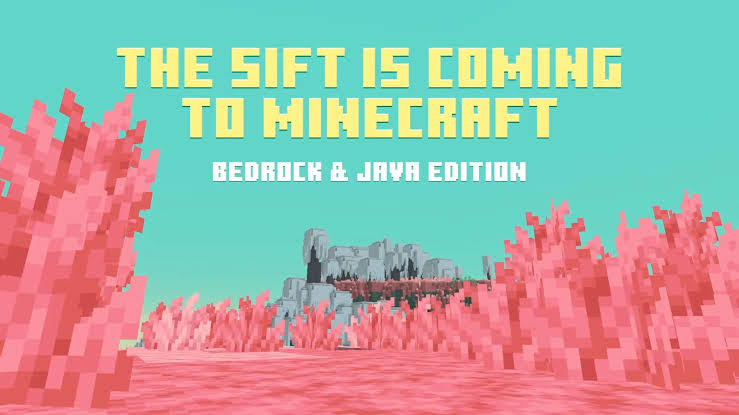

Hey everyone, MrAG here with some huge Minecraft news!
After more than 14 years, Minecraft is finally getting its first official brand-new dimension. It’s called The Sift, and it’s coming to both Java and Bedrock Edition in 2027.
This is a massive moment for the game. The last time we got a completely new dimension was the End… and that was way back in 2011. Now Mojang is opening a whole new world for us to explore.
Key Details
- Name: The Sift
- First new official dimension in over 14 years
- Coming to Minecraft Java & Bedrock Edition in 2027
- Will debut earlier in Minecraft Dungeons II on September 29, 2026

From the first looks, The Sift features a vibrant, colorful world with unique creatures, pink landscapes, and a completely different vibe from the Overworld, Nether, or End. It looks bright, mysterious, and full of new things to discover.
Players will be able to experience parts of this dimension first in Minecraft Dungeons II when it launches on September 29, 2026 — giving us an early taste before it fully arrives in the main game in 2027.
This is easily one of the biggest Minecraft announcements in years. A whole new dimension means new biomes, new mobs, new blocks, new bosses… and of course, tons of new content for videos!
I’ll be covering everything about The Sift as more details drop — first looks, theories, and eventually full survival playthroughs when it releases. Make sure you’re subscribed so you don’t miss any of it!
The Sift is coming… are you ready?
Watch on MrAG YouTube
See you in The Sift.
— MrAG
💬 Comments